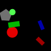
(1)
A green pentagon is darker than a circle.
A rectangle is darker than a green shape.
A triangle is lighter than a green rectangle.
A green rectangle is lighter than a green circle.
A triangle is lighter than a green rectangle.
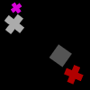
(2)
A blue semicircle is darker than a triangle.
A green shape is bigger than a yellow circle.
A yellow shape is smaller than a red circle.
A cross is darker than a blue semicircle.
A rectangle is bigger than a yellow shape.
(3)
A magenta semicircle is bigger than a cyan semicircle.
A red ellipse is bigger than a yellow shape.
A cyan rectangle is darker than a semicircle.
A cyan shape is bigger than a semicircle.
A red semicircle is smaller than a cyan semicircle.
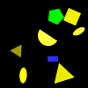
(4)
A magenta shape is lighter than a rectangle.
A magenta shape is lighter than a magenta rectangle.
A rectangle is lighter than a magenta rectangle.
A magenta square is darker than a magenta rectangle.
A cyan rectangle is bigger than a magenta rectangle.
(5)
A magenta triangle is bigger than a blue shape.
A blue shape is bigger than a magenta triangle.
A blue triangle is lighter than a cross.
A blue pentagon is darker than a triangle.
A triangle is lighter than a gray pentagon.
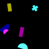
(6)
A magenta circle is bigger than a circle.
A circle is lighter than a yellow cross.
A green circle is bigger than a yellow circle.
A magenta shape is bigger than a blue circle.
A red shape is bigger than a circle.
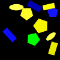
(7)
A magenta shape is smaller than a red semicircle.
A square is bigger than a green shape.
A cyan shape is darker than an ellipse.
A cyan rectangle is darker than a cyan shape.
A red shape is darker than a red semicircle.
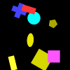
(8)
A blue pentagon is bigger than a green pentagon.
A magenta shape is bigger than a green pentagon.
A pentagon is darker than a green shape.
A green triangle is lighter than a green rectangle.
A green triangle is lighter than an ellipse.
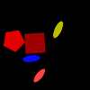
(9)
A blue rectangle is lighter than a blue triangle.
A blue shape is darker than a circle.
A blue rectangle is lighter than a triangle.
A circle is lighter than a blue triangle.
A blue circle is lighter than a triangle.
(10)
A pentagon is bigger than a yellow shape.
A yellow shape is smaller than a red pentagon.
A red shape is bigger than a red cross.
A square is darker than an ellipse.
A red shape is bigger than a cyan pentagon.
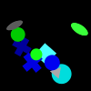
(11)
A cross is darker than a blue semicircle.
A rectangle is lighter than a red ellipse.
A triangle is lighter than a red rectangle.
A blue rectangle is smaller than a cyan shape.
A semicircle is darker than a blue square.
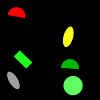
(12)
A green rectangle is lighter than a gray shape.
A green triangle is darker than a green rectangle.
A green shape is darker than a green rectangle.
A cyan shape is bigger than a circle.
A green square is smaller than a cyan square.
(13)
A circle is darker than a semicircle.
A gray square is bigger than a square.
A circle is darker than a cyan semicircle.
A red shape is smaller than a cyan square.
A red shape is smaller than a square.
(14)
A cyan shape is smaller than a red ellipse.
A rectangle is darker than a pentagon.
An ellipse is lighter than a cyan pentagon.
An ellipse is darker than a cyan shape.
A green ellipse is bigger than an ellipse.
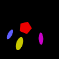
(15)
A rectangle is lighter than a blue pentagon.
A blue cross is lighter than a blue pentagon.
A blue rectangle is bigger than a rectangle.
A blue shape is bigger than a blue rectangle.
A pentagon is darker than a blue shape.
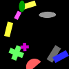
(16)
A yellow shape is smaller than a cyan triangle.
A yellow rectangle is lighter than a triangle.
A magenta shape is bigger than a red shape.
A yellow shape is darker than a yellow cross.
An ellipse is lighter than a triangle.
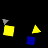
(17)
A yellow pentagon is bigger than a red pentagon.
A blue pentagon is smaller than a pentagon.
A green pentagon is bigger than a pentagon.
A yellow pentagon is smaller than a red pentagon.
A yellow cross is darker than a blue pentagon.
(18)
A blue triangle is lighter than a blue shape.
A circle is darker than a blue semicircle.
A blue semicircle is darker than a circle.
A blue semicircle is darker than a blue shape.
A blue semicircle is darker than a blue circle.
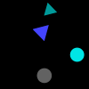
(19)
A blue shape is bigger than a red shape.
A pentagon is darker than a yellow shape.
A yellow square is smaller than a red shape.
A yellow semicircle is darker than a yellow square.
A yellow pentagon is bigger than a red pentagon.
(20)
A yellow shape is lighter than a yellow pentagon.
A cyan shape is smaller than a yellow triangle.
A pentagon is darker than a green triangle.
A yellow rectangle is lighter than a yellow shape.
A yellow triangle is smaller than a yellow shape.

(21)
A square is bigger than a magenta shape.
A magenta shape is smaller than a yellow cross.
A green shape is smaller than a gray square.
A blue shape is bigger than a magenta circle.
A green shape is smaller than a square.
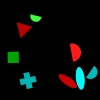
(22)
A blue ellipse is bigger than a magenta shape.
A red shape is bigger than a cyan square.
A square is lighter than a magenta triangle.
An ellipse is darker than a blue triangle.
A square is darker than a magenta circle.
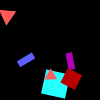
(23)
A red shape is smaller than a magenta shape.
A magenta shape is lighter than a pentagon.
A red shape is smaller than a magenta pentagon.
A pentagon is darker than a magenta pentagon.
A magenta pentagon is darker than a gray triangle.
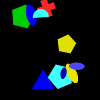
(24)
A green ellipse is smaller than a blue shape.
A blue circle is smaller than a blue shape.
A blue shape is bigger than a triangle.
A blue shape is bigger than a green triangle.
A green triangle is smaller than a red shape.
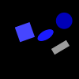
(25)
A circle is lighter than a green shape.
A yellow shape is bigger than a green pentagon.
An ellipse is smaller than a magenta shape.
A blue pentagon is bigger than a green pentagon.
A magenta ellipse is bigger than a magenta ellipse.

(26)
A gray shape is darker than a rectangle.
A blue shape is smaller than a gray rectangle.
A rectangle is bigger than a gray shape.
A gray rectangle is bigger than a rectangle.
A gray semicircle is lighter than a rectangle.
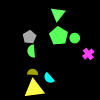
(27)
A magenta shape is smaller than a magenta cross.
A triangle is darker than a magenta shape.
A yellow shape is smaller than a red ellipse.
A green shape is smaller than a red ellipse.
A red shape is bigger than a red pentagon.
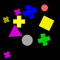
(28)
A red shape is darker than a red square.
A square is smaller than a green shape.
A rectangle is lighter than a red square.
A pentagon is darker than a square.
A blue shape is smaller than a gray square.
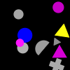
(29)
A blue square is bigger than a cyan square.
An ellipse is darker than a cyan shape.
A red square is smaller than a magenta shape.
A gray cross is smaller than a magenta cross.
A cross is darker than a cyan cross.
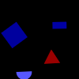
(30)
A blue rectangle is smaller than a rectangle.
A gray semicircle is darker than a gray shape.
A gray shape is lighter than a rectangle.
A square is darker than a gray rectangle.
A cyan rectangle is bigger than a gray rectangle.
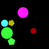
(31)
A cyan cross is lighter than a cyan rectangle.
An ellipse is darker than a yellow rectangle.
A square is lighter than a cyan shape.
A rectangle is lighter than a green cross.
A red cross is darker than a rectangle.
(32)
A square is lighter than a blue triangle.
A cyan rectangle is bigger than a cyan rectangle.
A blue shape is darker than a blue square.
A magenta shape is smaller than a red square.
A yellow rectangle is bigger than a cyan shape.
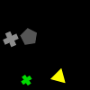
(33)
A gray square is lighter than a semicircle.
A blue shape is lighter than a blue semicircle.
A blue pentagon is darker than a blue square.
A circle is darker than a blue shape.
A blue shape is lighter than a blue semicircle.
(34)
A red semicircle is darker than a red shape.
A pentagon is lighter than a yellow shape.
A semicircle is bigger than a yellow shape.
A yellow square is lighter than a yellow shape.
A blue shape is bigger than a gray cross.
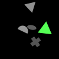
(35)
A green shape is smaller than a square.
A yellow shape is lighter than a yellow rectangle.
A rectangle is darker than a yellow circle.
A yellow circle is lighter than a yellow rectangle.
A red circle is bigger than a green circle.
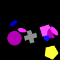
(36)
A magenta ellipse is smaller than a magenta shape.
A pentagon is bigger than a magenta shape.
A blue shape is bigger than a magenta ellipse.
A yellow shape is bigger than a magenta ellipse.
A magenta shape is bigger than a circle.
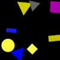
(37)
A green rectangle is bigger than a cyan rectangle.
A cyan shape is bigger than a green rectangle.
A circle is lighter than a green shape.
A triangle is lighter than a green shape.
A magenta shape is bigger than a rectangle.
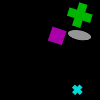
(38)
A green square is smaller than a square.
A magenta shape is lighter than a magenta ellipse.
A magenta ellipse is darker than a magenta shape.
A green shape is smaller than a gray shape.
A red shape is bigger than a green square.
(39)
A red shape is bigger than a blue cross.
A triangle is darker than a yellow circle.
A cross is smaller than a red shape.
A square is lighter than a blue semicircle.
A triangle is darker than a green triangle.
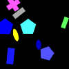
(40)
A square is lighter than a triangle.
A gray shape is smaller than a blue square.
A semicircle is darker than a red shape.
A cyan shape is bigger than a gray semicircle.
A yellow ellipse is bigger than a gray shape.
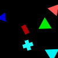
(41)
A pentagon is lighter than a gray pentagon.
A gray triangle is darker than a gray shape.
A square is bigger than a gray shape.
A gray shape is smaller than a red pentagon.
A gray shape is bigger than a gray pentagon.
(42)
A blue shape is lighter than a cyan ellipse.
A triangle is darker than a blue triangle.
A cyan shape is darker than a gray triangle.
A blue shape is bigger than an ellipse.
A circle is bigger than a cyan shape.
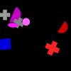
(43)
A red cross is darker than a pentagon.
A gray shape is lighter than a cross.
A red ellipse is darker than a red triangle.
A red triangle is darker than a cross.
A triangle is lighter than a red cross.
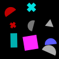
(44)
A blue circle is bigger than a yellow circle.
A blue shape is smaller than a yellow circle.
A green shape is bigger than a yellow circle.
A blue shape is bigger than a circle.
A circle is smaller than a blue shape.
(45)
A green shape is smaller than a green triangle.
A rectangle is darker than a green semicircle.
A red triangle is darker than an ellipse.
A green shape is smaller than a red shape.
A green shape is bigger than a gray triangle.
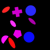
(46)
A green shape is smaller than a circle.
A cyan shape is smaller than a yellow circle.
A yellow circle is bigger than a circle.
A yellow circle is bigger than a cyan shape.
A cyan shape is smaller than a pentagon.
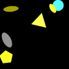
(47)
A blue rectangle is lighter than a blue triangle.
A cross is smaller than a blue shape.
A rectangle is lighter than a blue triangle.
A blue shape is smaller than a gray triangle.
A blue shape is darker than a rectangle.
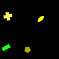
(48)
A triangle is darker than a blue shape.
A rectangle is darker than a green cross.
A blue rectangle is lighter than a blue shape.
A blue triangle is darker than a red rectangle.
A red shape is smaller than a triangle.
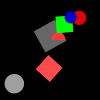
(49)
A rectangle is bigger than a blue shape.
A cyan shape is bigger than a red shape.
A rectangle is darker than a red shape.
A rectangle is lighter than a red shape.
A red shape is lighter than a red rectangle.
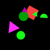
(50)
A pentagon is lighter than a yellow shape.
A circle is darker than a yellow shape.
A yellow rectangle is lighter than a rectangle.
A yellow rectangle is darker than a rectangle.
A yellow rectangle is darker than a yellow pentagon.
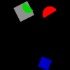
(51)
A magenta shape is darker than a triangle.
A red triangle is darker than a red triangle.
A cyan triangle is darker than a triangle.
A blue shape is smaller than a triangle.
A cyan triangle is bigger than a red triangle.
(52)
A magenta shape is bigger than a semicircle.
A magenta shape is bigger than a magenta semicircle.
A blue shape is bigger than a pentagon.
A magenta semicircle is bigger than a yellow pentagon.
A green semicircle is smaller than a circle.
(53)
A triangle is bigger than a gray shape.
A pentagon is bigger than a gray shape.
A gray shape is bigger than a cross.
A magenta shape is bigger than a square.
A gray shape is smaller than a gray pentagon.
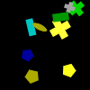
(54)
A cyan shape is bigger than a square.
A circle is lighter than a cyan square.
A triangle is darker than a cyan circle.
A gray shape is lighter than a cyan circle.
A cyan circle is lighter than a cyan shape.

(55)
A cyan pentagon is bigger than a cyan shape.
A yellow shape is smaller than a cyan pentagon.
A magenta pentagon is smaller than a cyan shape.
A magenta shape is bigger than a cyan pentagon.
A blue shape is darker than a cyan pentagon.
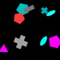
(56)
A pentagon is lighter than a red semicircle.
A blue shape is lighter than a yellow pentagon.
A square is lighter than a red semicircle.
A gray shape is bigger than a red square.
A blue shape is smaller than a red semicircle.
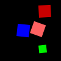
(57)
A gray cross is smaller than a gray cross.
A cyan shape is smaller than a cross.
A cross is smaller than a gray shape.
A gray cross is bigger than a gray cross.
A gray shape is smaller than a gray cross.
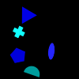
(58)
A magenta circle is smaller than a blue circle.
A magenta circle is darker than a circle.
A cyan shape is darker than a blue circle.
A gray shape is bigger than a blue shape.
A magenta shape is bigger than a magenta circle.
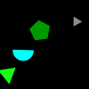
(59)
A magenta pentagon is lighter than a circle.
A magenta shape is smaller than a magenta shape.
A green shape is smaller than a magenta circle.
A pentagon is lighter than a green shape.
A circle is darker than a magenta shape.
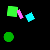
(60)
An ellipse is darker than a magenta shape.
A magenta circle is smaller than a magenta circle.
A circle is lighter than a magenta circle.
A cross is lighter than a magenta circle.
A gray shape is darker than a magenta circle.
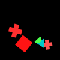
(61)
A triangle is lighter than a red triangle.
A red triangle is darker than a triangle.
A red shape is smaller than a red triangle.
A red circle is lighter than a red triangle.
A red shape is smaller than a red triangle.

(62)
A pentagon is darker than a blue ellipse.
A blue pentagon is darker than a blue circle.
A red triangle is bigger than a square.
A red shape is bigger than a circle.
A yellow shape is darker than a circle.
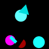
(63)
A blue pentagon is lighter than a pentagon.
A gray shape is lighter than a gray pentagon.
A gray square is smaller than a square.
A pentagon is darker than a gray shape.
A green triangle is darker than a square.
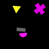
(64)
A green shape is smaller than a green shape.
A green shape is smaller than a green pentagon.
A green shape is smaller than a yellow rectangle.
A pentagon is lighter than a yellow circle.
A cyan shape is lighter than a rectangle.
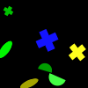
(65)
A red shape is bigger than an ellipse.
A yellow shape is smaller than an ellipse.
A yellow shape is smaller than a red shape.
An ellipse is lighter than a red shape.
A yellow shape is bigger than a yellow ellipse.
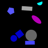
(66)
A yellow rectangle is bigger than a rectangle.
A cyan shape is smaller than a yellow rectangle.
A green rectangle is lighter than a square.
A square is darker than a green rectangle.
A square is darker than a green rectangle.
(67)
A cyan triangle is darker than a pentagon.
An ellipse is lighter than a cyan triangle.
A cyan rectangle is lighter than a cyan shape.
An ellipse is lighter than a yellow shape.
An ellipse is lighter than a cyan triangle.
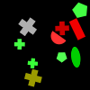
(68)
A rectangle is darker than a magenta shape.
A red rectangle is bigger than a magenta rectangle.
A square is lighter than a magenta rectangle.
A magenta shape is smaller than a square.
A gray shape is bigger than a magenta square.
(69)
A magenta shape is darker than a gray rectangle.
A cyan square is darker than a cyan semicircle.
A semicircle is darker than a cyan square.
A cyan square is lighter than a semicircle.
A gray square is smaller than a gray shape.

(70)
A magenta square is bigger than a green square.
A green square is smaller than a magenta square.
A green shape is smaller than a square.
A magenta square is bigger than a green pentagon.
A cyan shape is bigger than a square.
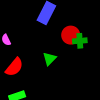
(71)
A circle is lighter than a blue square.
A yellow triangle is lighter than a yellow shape.
A rectangle is darker than a yellow triangle.
A red shape is lighter than a blue square.
A yellow shape is darker than a yellow triangle.
(72)
A triangle is smaller than a yellow shape.
A gray triangle is lighter than a gray pentagon.
A gray shape is bigger than a cyan pentagon.
A magenta shape is bigger than a yellow triangle.
An ellipse is darker than a blue triangle.
(73)
A magenta shape is smaller than a square.
A magenta square is bigger than a green shape.
A green shape is smaller than a magenta square.
A green square is bigger than a magenta ellipse.
A magenta square is smaller than a gray shape.
(74)
An ellipse is darker than a red shape.
A red shape is smaller than a gray ellipse.
A gray shape is smaller than a red ellipse.
A red shape is smaller than a gray cross.
A red cross is lighter than an ellipse.
(75)
A triangle is darker than a magenta square.
A green triangle is smaller than a yellow triangle.
A magenta shape is bigger than a yellow triangle.
A triangle is bigger than a yellow shape.
A yellow shape is smaller than a cyan shape.
(76)
A triangle is lighter than a yellow shape.
A triangle is lighter than a yellow shape.
A cross is darker than a yellow shape.
A yellow square is darker than a yellow shape.
A triangle is lighter than a cross.
(77)
A circle is smaller than a yellow shape.
A gray shape is bigger than a red rectangle.
A cross is darker than a cross.
A gray rectangle is smaller than a gray rectangle.
A cross is smaller than a red shape.
(78)
A triangle is darker than a blue triangle.
A cyan shape is smaller than a gray triangle.
A red semicircle is smaller than a cyan shape.
A yellow triangle is smaller than a cyan triangle.
A magenta shape is smaller than a cyan triangle.
(79)
A square is darker than a square.
An ellipse is darker than a yellow shape.
A square is lighter than a pentagon.
A pentagon is darker than a square.
A blue square is smaller than a square.
(80)
A blue pentagon is smaller than a pentagon.
A cyan rectangle is lighter than a cyan pentagon.
A square is darker than a cyan shape.
A yellow pentagon is bigger than a pentagon.
A yellow pentagon is lighter than a pentagon.
(81)
A green square is bigger than a magenta shape.
A gray shape is bigger than a yellow square.
A pentagon is darker than a magenta shape.
A cyan cross is lighter than a square.
A magenta square is lighter than a magenta square.
(82)
A magenta rectangle is lighter than a magenta pentagon.
A circle is darker than a magenta shape.
A square is lighter than a magenta circle.
A pentagon is lighter than a rectangle.
A square is lighter than a magenta circle.
(83)
A red shape is bigger than a cyan shape.
A gray shape is bigger than a red square.
A red square is smaller than a cyan shape.
A red shape is smaller than a green shape.
A red square is smaller than a cyan shape.
(84)
An ellipse is darker than a red shape.
A rectangle is darker than a red triangle.
A blue shape is smaller than a blue pentagon.
A green shape is darker than a triangle.
A red shape is smaller than a blue ellipse.
(85)
A circle is darker than a yellow circle.
A yellow shape is bigger than a yellow circle.
A yellow circle is darker than a circle.
A circle is darker than a yellow triangle.
A circle is lighter than a yellow circle.
(86)
A rectangle is bigger than a green shape.
A green square is lighter than a cyan rectangle.
A rectangle is darker than a green shape.
A rectangle is darker than a green square.
A rectangle is darker than a square.
(87)
A blue shape is smaller than a green ellipse.
A cross is lighter than a green ellipse.
A gray pentagon is bigger than a pentagon.
A green shape is bigger than a blue ellipse.
A yellow shape is smaller than a green ellipse.
(88)
A red pentagon is bigger than a pentagon.
A gray shape is bigger than a red pentagon.
A cross is lighter than a red triangle.
A pentagon is smaller than a red shape.
A red shape is bigger than a yellow pentagon.
(89)
A green ellipse is lighter than a semicircle.
An ellipse is darker than a green semicircle.
A green ellipse is lighter than a semicircle.
A gray shape is bigger than a red shape.
A green shape is bigger than a magenta circle.
(90)
A gray shape is lighter than a red circle.
A red ellipse is darker than a red shape.
A blue shape is lighter than a rectangle.
A circle is darker than a red shape.
A cross is lighter than a red circle.

(91)
A blue shape is smaller than a yellow ellipse.
A blue shape is lighter than a blue pentagon.
A blue ellipse is bigger than a blue ellipse.
A green shape is smaller than a yellow triangle.
A blue shape is bigger than an ellipse.
(92)
A cyan shape is smaller than an ellipse.
A yellow cross is lighter than a circle.
A pentagon is darker than a yellow shape.
A blue ellipse is bigger than a red shape.
An ellipse is smaller than a gray shape.
(93)
A blue shape is bigger than a blue cross.
A cross is smaller than a blue shape.
A blue shape is lighter than a rectangle.
A blue shape is smaller than a blue cross.
A blue cross is smaller than a cross.
(94)
A red shape is smaller than a circle.
A cyan shape is bigger than a magenta shape.
A green shape is smaller than a triangle.
A cross is darker than a magenta shape.
A magenta triangle is lighter than a triangle.
(95)
A blue cross is lighter than a square.
A cross is lighter than a gray semicircle.
A magenta shape is smaller than a semicircle.
A green cross is lighter than a semicircle.
A gray cross is smaller than a cyan cross.
(96)
A cross is lighter than a magenta cross.
A gray shape is smaller than a magenta cross.
A yellow shape is bigger than a magenta cross.
A yellow shape is smaller than a magenta cross.
A gray shape is bigger than a yellow circle.
(97)
A blue square is smaller than a red square.
A red square is bigger than a magenta square.
A square is bigger than a magenta shape.
A semicircle is lighter than a red circle.
A green shape is smaller than a square.
(98)
A magenta shape is smaller than a red triangle.
A magenta semicircle is lighter than a circle.
A rectangle is darker than a red shape.
A red rectangle is darker than a triangle.
A circle is darker than a red rectangle.
(99)
An ellipse is smaller than a gray shape.
A cross is smaller than a green shape.
A circle is lighter than a green ellipse.
A green shape is bigger than a yellow ellipse.
A green circle is darker than a green ellipse.

(100)
A blue shape is bigger than a blue rectangle.
A blue shape is bigger than a blue rectangle.
A rectangle is lighter than a magenta shape.
A red shape is bigger than a green semicircle.
A green shape is smaller than a red semicircle.